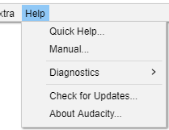

Help Menu
- Click, or hover, on any menu item in the image to read about that command. Skip the image
- 
Quick Help
The "Getting Started" section of our Manual - quick information, which will be displayed in your browser, on how to play, record and edit audio, and export to an audio file like MP3 or WAV.
Manual
Takes you to the main sections of our Manual, displayed in your browser:
- Tutorials
- Using Audacity - fundamental concepts of working with digital audio
- Reference - all the menus, buttons and controls
- Miscellaneous - including Glossary and Frequently Asked Questions
Tools
The Tools submenu provides tools for screen image capture and benchmarking for diagnostic purposes.
Diagnostics
The Diagnostics submenu has a set of tools to aid diagnosing problems in Audacity.
Check for Updates...
This takes you to the Download page of the Audacity website where you can see what the latest release version of Audacity is. You can compare the latest release with the version you have now, which will be shown at "?from_ver" in the browser's address bar and which you can also see at About Audacity....
About Audacity...
Displays the "About Audacity" dialog, containing tabs for:
- Audacity version information, credits and list of libraries used in Audacity
- Build information for the current build, including file format support, enabled libraries and features and the source code commit number that the build was made from
- GPL v2 License.